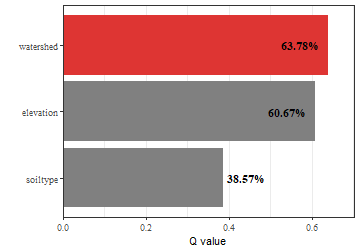
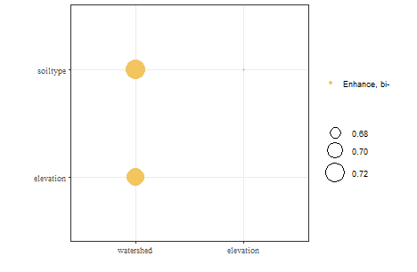
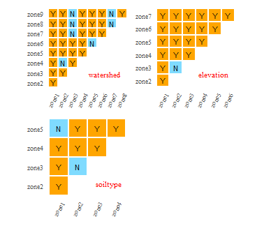
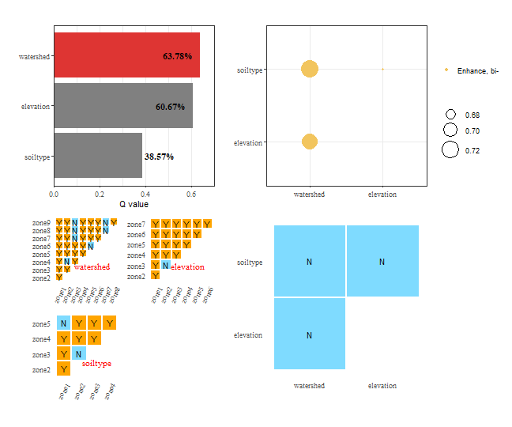

This vignette explains how to run native geographic detector(GD) in gdverse package.
Load package and pre-processing data.
See layers in NTDs.gpkg:
ntdspath = system.file("extdata", "NTDs.gpkg",package = 'gdverse')
st_layers(ntdspath)
## Driver: GPKG
## Available layers:
## layer_name geometry_type features fields crs_name
## 1 disease Polygon 189 2 unknown
## 2 watershed Polygon 9 2 unknown
## 3 elevation Multi Polygon 7 2 unknown
## 4 soiltype Multi Polygon 6 2 unknownIn file NTDs.gpkg, disease layer is the
dependent variable, which is a continuous numerical variable, while
others are independent and discrete variables.
Now we need to combine these layers together:
watershed = read_sf(ntdspath,layer = 'watershed')
elevation = read_sf(ntdspath,layer = 'elevation')
soiltype = read_sf(ntdspath,layer = 'soiltype')
disease = read_sf(ntdspath,layer = 'disease')Plot them together:
library(cowplot)
f1 = ggplot(data = disease) +
geom_sf(aes(fill = incidence),lwd = .1,color = 'grey') +
viridis::scale_fill_viridis(option="mako", direction = -1) +
theme_bw() +
theme(
axis.text = element_blank(),
axis.ticks = element_blank(),
axis.title = element_blank(),
panel.grid = element_blank(),
legend.position = 'inside',
legend.position.inside = c(.1,.25),
legend.background = element_rect(fill = 'transparent',color = NA)
)
f2 = ggplot(data = watershed) +
geom_sf(aes(fill = watershed),lwd = .1,color = 'grey') +
tidyterra::scale_fill_whitebox_c() +
coord_sf(crs = NULL) +
theme_bw() +
theme(
axis.text = element_blank(),
axis.ticks = element_blank(),
axis.title = element_blank(),
panel.grid = element_blank(),
legend.position = 'inside',
legend.position.inside = c(.1,.25),
legend.background = element_rect(fill = 'transparent',color = NA)
)
f3 = ggplot(data = elevation) +
geom_sf(aes(fill = elevation),lwd = .1,color = 'grey') +
tidyterra::scale_fill_hypso_c() +
theme_bw() +
theme(
axis.text = element_blank(),
axis.ticks = element_blank(),
axis.title = element_blank(),
panel.grid = element_blank(),
legend.position = 'inside',
legend.position.inside = c(.1,.25),
legend.background = element_rect(fill = 'transparent',color = NA)
)
f4 = ggplot(data = soiltype) +
geom_sf(aes(fill = soiltype),lwd = .1,color = 'grey') +
tidyterra::scale_fill_wiki_c() +
theme_bw() +
theme(
axis.text = element_blank(),
axis.ticks = element_blank(),
axis.title = element_blank(),
panel.grid = element_blank(),
legend.position = 'inside',
legend.position.inside = c(.1,.25),
legend.background = element_rect(fill = 'transparent',color = NA)
)
plot_grid(f1,f2,f3,f4, nrow = 2,label_fontfamily = 'serif',
labels = paste0('(',letters[1:4],')'),
label_fontface = 'plain',label_size = 10,
hjust = -1.5,align = 'hv') -> p
p
Attribute spatial join
NTDs = disease %>%
st_centroid() %>%
st_join(watershed[,"watershed"]) %>%
st_join(elevation[,"elevation"]) %>%
st_join(soiltype[,"soiltype"])Check whether has NA in NTDs:
NTDs %>%
dplyr::filter(if_any(everything(),~is.na(.x)))
## Simple feature collection with 4 features and 5 fields
## Geometry type: POINT
## Dimension: XY
## Bounding box: xmin: 301567.5 ymin: 3989433 xmax: 318763.3 ymax: 3991906
## Projected CRS: +proj=aea +lat_0=0 +lon_0=105 +lat_1=25 +lat_2=47 +x_0=0 +y_0=0 +datum=WGS84 +units=m +no_defs
## # A tibble: 4 × 6
## SP_ID incidence geom watershed elevation soiltype
## * <chr> <dbl> <POINT [m]> <int> <int> <int>
## 1 141 6.48 (318763.3 3991847) 9 NA 3
## 2 165 6.53 (316574.1 3989433) 4 NA 2
## 3 166 6.43 (311439.1 3990674) 4 NA 2
## 4 188 6.26 (301567.5 3991906) NA 2 3Filter out all rows with no NA values:
NTDs %>%
dplyr::filter(if_all(everything(),~!is.na(.x))) -> NTDs
NTDs
## Simple feature collection with 185 features and 5 fields
## Geometry type: POINT
## Dimension: XY
## Bounding box: xmin: 272784.9 ymin: 3982369 xmax: 333088.5 ymax: 4025117
## Projected CRS: +proj=aea +lat_0=0 +lon_0=105 +lat_1=25 +lat_2=47 +x_0=0 +y_0=0 +datum=WGS84 +units=m +no_defs
## # A tibble: 185 × 6
## SP_ID incidence geom watershed elevation soiltype
## * <chr> <dbl> <POINT [m]> <int> <int> <int>
## 1 0 5.94 (287216.1 4004408) 5 5 5
## 2 1 5.87 (284861.2 4001734) 5 5 4
## 3 2 5.88 (287731.3 4000289) 5 5 5
## 4 3 5.98 (290808.8 4000994) 5 5 5
## 5 4 5.96 (290924.8 4004432) 5 5 1
## 6 5 5.66 (272784.9 4007758) 5 5 4
## 7 6 5.74 (274308.9 4010571) 5 5 4
## 8 7 5.88 (279539.7 4003222) 5 5 4
## 9 8 6.1 (279032.9 4005677) 5 5 4
## 10 9 5.89 (282534.9 4004849) 5 5 4
## # ℹ 175 more rowsRemove unnecessary columns of data:
NTDs = NTDs %>%
st_drop_geometry() %>%
dplyr::select(-SP_ID)
NTDs
## # A tibble: 185 × 4
## incidence watershed elevation soiltype
## <dbl> <int> <int> <int>
## 1 5.94 5 5 5
## 2 5.87 5 5 4
## 3 5.88 5 5 5
## 4 5.98 5 5 5
## 5 5.96 5 5 1
## 6 5.66 5 5 4
## 7 5.74 5 5 4
## 8 5.88 5 5 4
## 9 6.1 5 5 4
## 10 5.89 5 5 4
## # ℹ 175 more rowsFactor detector
fd = gd(incidence ~ watershed + elevation + soiltype,
data = NTDs,type = 'factor')
fd
## Factor Detector
##
## | variable | Q-statistic | P-value |
## |:---------:|:-----------:|:-----------:|
## | watershed | 0.6377737 | 0.000128803 |
## | elevation | 0.6067087 | 0.043382244 |
## | soiltype | 0.3857168 | 0.372145486 |
plot(fd)
Interaction detector
id = gd(incidence ~ watershed + elevation + soiltype,
data = NTDs,type = 'interaction')
id
## Interaction Detector
##
## | Interactive variable | Interaction |
## |:---------------------:|:------------:|
## | watershed ∩ elevation | Enhance, bi- |
## | watershed ∩ soiltype | Enhance, bi- |
## | elevation ∩ soiltype | Enhance, bi- |
plot(id)
Risk detector
rd = gd(incidence ~ watershed + elevation + soiltype,
data = NTDs,type = 'risk')
rd
## Risk Detector
##
## Variable elevation:
##
## | zone | zone1 | zone2 | zone3 | zone4 | zone5 | zone6 |
## |:-----:|:-----:|:-----:|:-----:|:-----:|:-----:|:-----:|
## | zone2 | Yes | NA | NA | NA | NA | NA |
## | zone3 | Yes | No | NA | NA | NA | NA |
## | zone4 | Yes | Yes | Yes | NA | NA | NA |
## | zone5 | Yes | Yes | Yes | Yes | NA | NA |
## | zone6 | Yes | Yes | Yes | Yes | Yes | NA |
## | zone7 | Yes | Yes | Yes | Yes | Yes | Yes |
##
## Variable soiltype:
##
## | zone | zone1 | zone2 | zone3 | zone4 |
## |:-----:|:-----:|:-----:|:-----:|:-----:|
## | zone2 | Yes | NA | NA | NA |
## | zone3 | Yes | No | NA | NA |
## | zone4 | Yes | Yes | Yes | NA |
## | zone5 | No | Yes | Yes | Yes |
##
## Variable watershed:
##
## | zone | zone1 | zone2 | zone3 | zone4 | zone5 | zone6 | zone7 | zone8 |
## |:-----:|:-----:|:-----:|:-----:|:-----:|:-----:|:-----:|:-----:|:-----:|
## | zone2 | Yes | NA | NA | NA | NA | NA | NA | NA |
## | zone3 | Yes | Yes | NA | NA | NA | NA | NA | NA |
## | zone4 | Yes | No | Yes | NA | NA | NA | NA | NA |
## | zone5 | Yes | Yes | Yes | Yes | NA | NA | NA | NA |
## | zone6 | Yes | Yes | Yes | Yes | No | NA | NA | NA |
## | zone7 | Yes | Yes | No | Yes | Yes | Yes | NA | NA |
## | zone8 | Yes | Yes | No | Yes | Yes | Yes | No | NA |
## | zone9 | Yes | Yes | No | Yes | Yes | Yes | No | Yes |
plot(rd)
You can change the significant interval by assign alpha
argument,the default value of alpha argument is
0.95.
rd99 = gd(incidence ~ watershed + elevation + soiltype,
data = NTDs,type = 'risk',alpha = 0.99)
rd99
## Risk Detector
##
## Variable elevation:
##
## | zone | zone1 | zone2 | zone3 | zone4 | zone5 | zone6 |
## |:-----:|:-----:|:-----:|:-----:|:-----:|:-----:|:-----:|
## | zone2 | Yes | NA | NA | NA | NA | NA |
## | zone3 | Yes | No | NA | NA | NA | NA |
## | zone4 | Yes | Yes | Yes | NA | NA | NA |
## | zone5 | Yes | Yes | Yes | Yes | NA | NA |
## | zone6 | Yes | Yes | Yes | Yes | Yes | NA |
## | zone7 | Yes | Yes | Yes | Yes | Yes | Yes |
##
## Variable soiltype:
##
## | zone | zone1 | zone2 | zone3 | zone4 |
## |:-----:|:-----:|:-----:|:-----:|:-----:|
## | zone2 | Yes | NA | NA | NA |
## | zone3 | Yes | No | NA | NA |
## | zone4 | Yes | Yes | Yes | NA |
## | zone5 | No | Yes | Yes | Yes |
##
## Variable watershed:
##
## | zone | zone1 | zone2 | zone3 | zone4 | zone5 | zone6 | zone7 | zone8 |
## |:-----:|:-----:|:-----:|:-----:|:-----:|:-----:|:-----:|:-----:|:-----:|
## | zone2 | Yes | NA | NA | NA | NA | NA | NA | NA |
## | zone3 | Yes | Yes | NA | NA | NA | NA | NA | NA |
## | zone4 | Yes | No | Yes | NA | NA | NA | NA | NA |
## | zone5 | Yes | Yes | Yes | Yes | NA | NA | NA | NA |
## | zone6 | Yes | Yes | Yes | Yes | No | NA | NA | NA |
## | zone7 | Yes | Yes | No | Yes | Yes | Yes | NA | NA |
## | zone8 | Yes | Yes | No | Yes | Yes | Yes | No | NA |
## | zone9 | Yes | Yes | No | Yes | Yes | Yes | No | Yes |Ecological detector
ed = gd(incidence ~ watershed + elevation + soiltype,
data = NTDs,type = 'ecological')
ed
## Ecological Detector
##
## | | elevation | soiltype |
## |:---------|:---------:|:--------:|
## |watershed | No | No |
## |elevation | NA | No |
plot(ed)
You can also change the significant interval by assign
alpha argument,the default value of alpha
argument is 0.95.
ed99 = gd(incidence ~ watershed + elevation + soiltype,
data = NTDs,type = 'ecological',alpha = 0.99)
ed99
## Ecological Detector
##
## | | elevation | soiltype |
## |:---------|:---------:|:--------:|
## |watershed | No | No |
## |elevation | NA | No |Running four basic geodetectors simultaneously
g = gd(incidence ~ watershed + elevation + soiltype,
data = NTDs,
type = c("factor", "interaction", "risk", "ecological"))
g
## Factor Detector
##
## | variable | Q-statistic | P-value |
## |:---------:|:-----------:|:-----------:|
## | watershed | 0.6377737 | 0.000128803 |
## | elevation | 0.6067087 | 0.043382244 |
## | soiltype | 0.3857168 | 0.372145486 |
##
## Interaction Detector
##
## | Interactive variable | Interaction |
## |:---------------------:|:------------:|
## | watershed ∩ elevation | Enhance, bi- |
## | watershed ∩ soiltype | Enhance, bi- |
## | elevation ∩ soiltype | Enhance, bi- |
##
## Risk Detector
##
## Variable elevation:
##
## | zone | zone1 | zone2 | zone3 | zone4 | zone5 | zone6 |
## |:-----:|:-----:|:-----:|:-----:|:-----:|:-----:|:-----:|
## | zone2 | Yes | NA | NA | NA | NA | NA |
## | zone3 | Yes | No | NA | NA | NA | NA |
## | zone4 | Yes | Yes | Yes | NA | NA | NA |
## | zone5 | Yes | Yes | Yes | Yes | NA | NA |
## | zone6 | Yes | Yes | Yes | Yes | Yes | NA |
## | zone7 | Yes | Yes | Yes | Yes | Yes | Yes |
##
## Variable soiltype:
##
## | zone | zone1 | zone2 | zone3 | zone4 |
## |:-----:|:-----:|:-----:|:-----:|:-----:|
## | zone2 | Yes | NA | NA | NA |
## | zone3 | Yes | No | NA | NA |
## | zone4 | Yes | Yes | Yes | NA |
## | zone5 | No | Yes | Yes | Yes |
##
## Variable watershed:
##
## | zone | zone1 | zone2 | zone3 | zone4 | zone5 | zone6 | zone7 | zone8 |
## |:-----:|:-----:|:-----:|:-----:|:-----:|:-----:|:-----:|:-----:|:-----:|
## | zone2 | Yes | NA | NA | NA | NA | NA | NA | NA |
## | zone3 | Yes | Yes | NA | NA | NA | NA | NA | NA |
## | zone4 | Yes | No | Yes | NA | NA | NA | NA | NA |
## | zone5 | Yes | Yes | Yes | Yes | NA | NA | NA | NA |
## | zone6 | Yes | Yes | Yes | Yes | No | NA | NA | NA |
## | zone7 | Yes | Yes | No | Yes | Yes | Yes | NA | NA |
## | zone8 | Yes | Yes | No | Yes | Yes | Yes | No | NA |
## | zone9 | Yes | Yes | No | Yes | Yes | Yes | No | Yes |
##
## Ecological Detector
##
## | | elevation | soiltype |
## |:---------|:---------:|:--------:|
## |watershed | No | No |
## |elevation | NA | No |
plot(g)